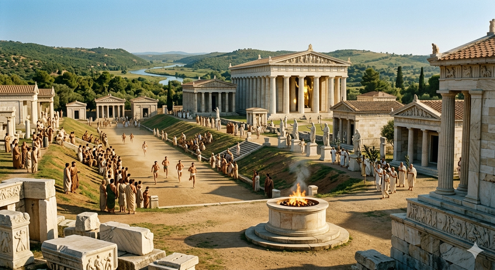

Primele Jocuri Olimpice despre care există informații istorice certe au avut loc în anul 776 î.Hr. în valea sacră a Olimpiei. Rădăcinile acestor festivități sunt pierdute în negura mitologiei, legendele atribuind fondarea lor fie eroului Hercule, fie lui Pelops.
Evoluția jocurilor a fost spectaculoasă, transformându-se dintr-o simplă procesiune locală într-un eveniment care dicta ritmul întregii lumi grecești. Sistemul de datare al grecilor se baza chiar pe aceste competiții, unitatea numită „Olimpiadă” reprezentând intervalul de patru ani.

Pe măsură ce influența polis-urilor s-a extins, situl s-a îmbogățit cu temple grandioase, precum cel al lui Zeus. Jocurile au rămas un pilon de stabilitate până la interzicerea lor în 393 d.Hr. de către împăratul Teodosiu I, fiind considerate practici păgâne.